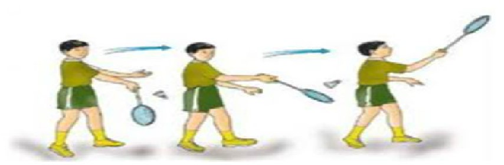

PUKULAN SERVIS
Servis Tinggi
|
KEMAHIRAN SERVIS TINGGI (FOREHAND) 1. Berdri dalam petak servis. 2. Pegang raket dengan teknik pegang depan. 3. Berat badan di kaki belakang. 4. Sebelah tangan memegang bulu tangkis paras pinggang. 5. Ayun tangan ke hadapan sambil lepaskan bulu tangkis. 6. Kontak bulu tangkis di bahagian muka raket. 7. Pindahkan berat badan ke kaki hadapan. |
|---|
Servis Rendah
|
KEMAHIRAN SERVIS TINGGI (FOREHAND)  1. Berdri dalam petak servis. 2. Pegang raket dengan teknik pegang depan. 3. Pegang bulu tangkis separas pinggang. 4. Ayun raket ke belakang sambil siku fleksi. 5. Mata ke arah bulu tangkis. 6. Kounci pergelangan tangan. 7. Bulu tangkis dilepaskan ke bawah sedikit dari paras pinggang. |
|---|
Servis Kilas
|
KEMAHIRAN SERVIS TINGGI (FOREHAND) 1. Berdri dalam petak servis. 2. Pegang raket dengan teknik pegang kilas. 3. Bulu tangkis dipegang separas pinggang dan hampir ke bahagian muka raket. 4. Berat badan berada di kaki hadapan. 5. Lakukan pukulan dengan pergerakan kilasan pergelangan tangan. |
|---|